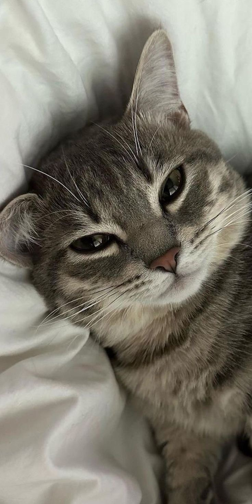
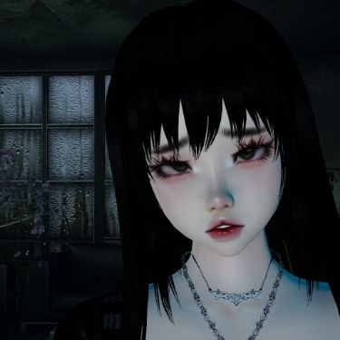
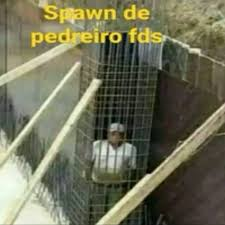
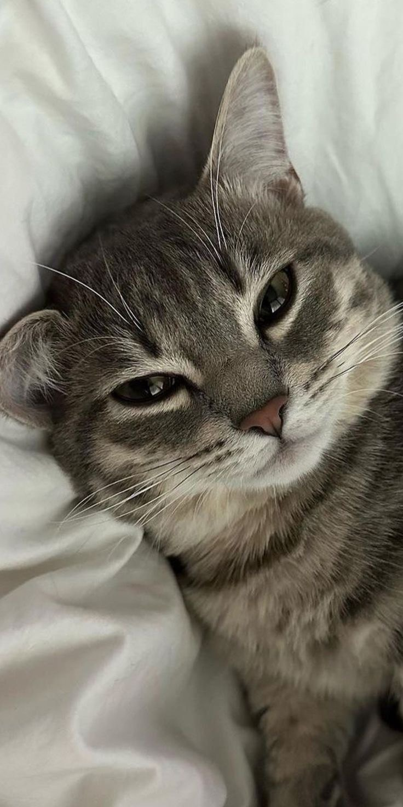
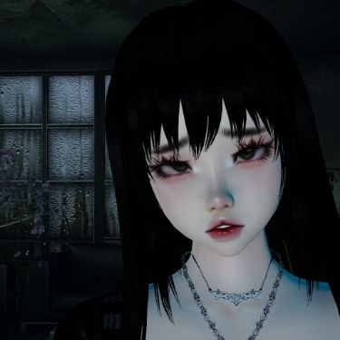
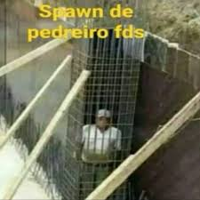

Sinceramente não sei oque dizer, mas so sei que a vida passa e a cada ano a amizade continua e todos crescem e um dia espero que todos vejam que os jews mandam no mundo, é isso, tenham um bom ano novo e abaixo, terá um video com minha cam ligada falando sobre os crias: